name: title class: middle, center, dark <center> <embed src="images/title.svg" type="image/svg+xml" height="100px" align="center" style="border: 0px solid lightgray;"/> </center> --- class: light # Detection Threshold 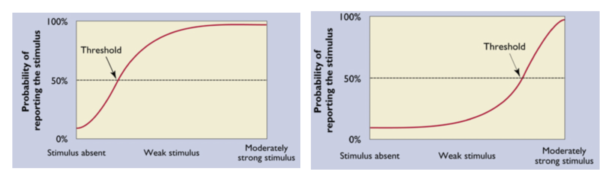 - Common question in psychophysics: is sensitivity to a stimulus discrete or continuous? - **Problem**: Sensitivity often confounded with response bias --- class: light # Signal Detection Theory (SDT) **Signal Detection Theory** is a procedure for measuring sensitivity to stimulation or a stimulus, independent of the subject's response bias. #### Brief History - In World War II radar waves were used to detect enemy aircraft. - The soldiers had to determine if the little spots of light are enemies, or simple noise (I.e. birds). - There was no clearly defined criteria for making these kinds of decisions. --- class: light # Radar Detection World War II - If an enemy went undectected people could be killed. - If noise was interpreted as an enemy, time and money would be lost and people would be put in harm's way #### Possible situations We'll unpack this in more detail: _ | radar of enemy | radar of birds --- | ---|--- **scramble jets** | hit | false alarm **ground crew** | miss | correct rejection --- class: light # Signal Detection Theory (SDT) - Used in many areas of psychology to measure the performance of subjects indepenent of their response biases - Perception (Lab part II) - Memory (Lab part III) #### Example: Detection Experiment - We want to measure a subject’s ability to detect very weak stimuli. --- class: light # Gabor detection as a function of contrast 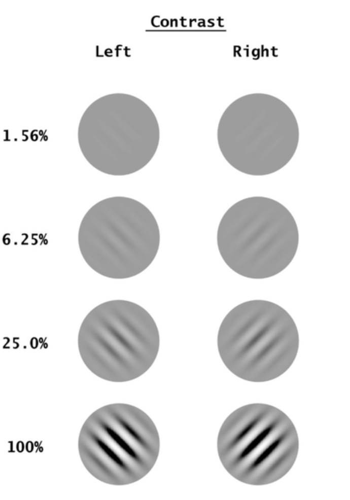 --- class: light # Not All Errors Are Equal - Reporting stimulus is present when it is absent ("false alarm") versus - Reporting stimulus is absent when it is present ("miss") --- class: light # Correct responses differ too - Reporting stimulus is present when it is present ("hit") versus - Reporting stimulus is absent when it is absent ("correct rejection") --- class: light # Stimulus-response Matrix _ | stimulus present | stimulus absent --- | ---|--- **subject says "yes"** | hit | false alarm **subject says "no"** | miss | correct rejection --- class: light # Stimulus-response Matrix Example from the text to make it more concrete: Radiologist examining a CT scan, looking for evidence of a tumor. <br><br> _ | tumor present | tumor absent --- | ---|--- **doctor says "yes"** | hit | false alarm **doctor says "no"** | miss | correct rejection 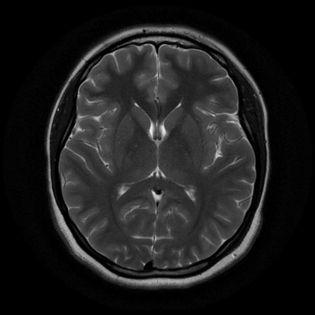 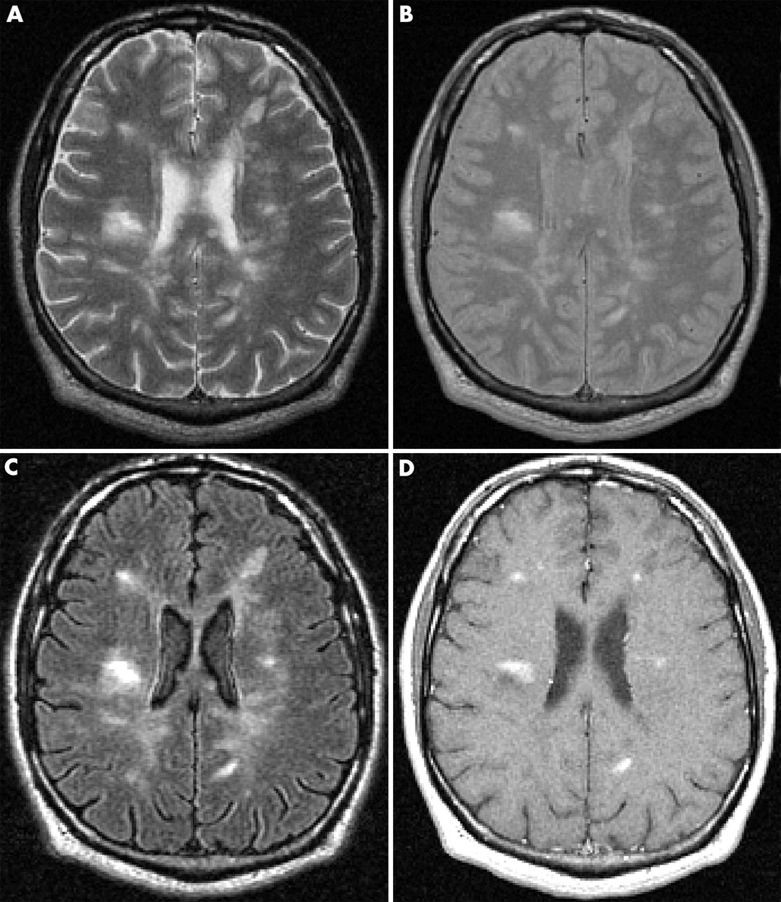 --- class: light # Relationship to Hypothesis Testing The concept of false alarms and misses are familiar to us based on the previous readings about the logic of hypothesis testing and the meaning/interpretation of p-values. <Br><br> _ | stimulus present | stimulus absent --- | ---|--- **subject says "yes"** | hit | false alarm (Type I error) **subject says "no"** | miss (Type II error) | correct rejection --- class: light # Signal Detection Theory SDT reduces the stimulus-response matrix to two meaningful quantities that can easily be compared across many different situations. 1. Detectability (d') - a subject's sensitivity to stimulation 2. Criterion ( $\beta$ ) - a subject's inclination to favor a particular response, also known as bias --- class: light # Factors that influence dectection - **External Noise**: There can be noise factors that are part of the photographic process, a smudge, or a bad spot on the film. Can be fixed with better measurement devices, radars, etc... - **Internal Noise**: Internal noise refers to the fact that neural responses are noisy. After one glance at a scan of a healthy lung, a hypothetical "tumor detector" neuron might fire 10 spikes per second. After a different glance at the same scan and under the same conditions, these neurons might fire 40 spikes per second. Because we don't know exactly where the noise is located, we will just talk about this as the **internal response**. --- class: light # Probability of occurence curves We know the concept of a *probability distribution*. Here we are talking abotu the probability of different internal responses when the stimulus is present or absent. 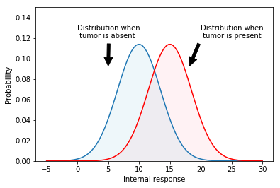 These could literally be the firing rate of neurons if you wanted to think of it that way, but it is just some unknown but (in principle) quantifiable unit. This is an **assumption** that helps us set up SDT. --- class: light # Making decisions How should we decide if a stimulus is present/absent or if a tumor is present/absent? One approach is to pick a criterion along the internal response axis: 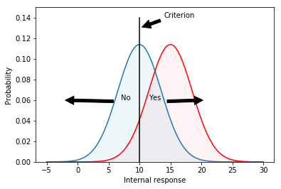 Everything above the criterion we will response "yes" to, anything below we will respond "no" to. --- class: light # HITS 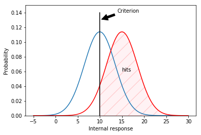 --- class: light # MISSES 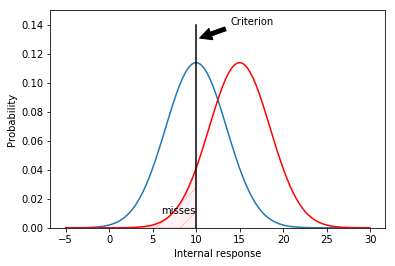 --- class: light # FALSE ALARMS 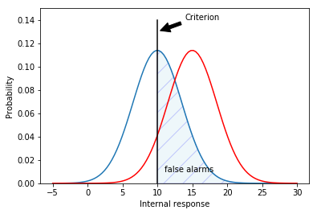 --- class: light # CORRECT REJECTIONS 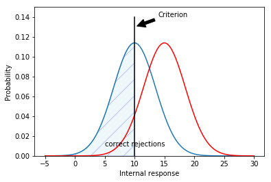 --- class: light # Shifting Criterion .col1[ 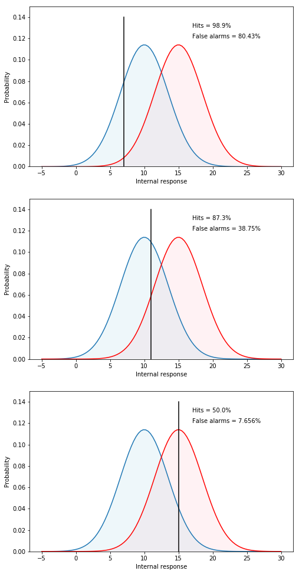 ] .col2[ - Low criterion (top), respond "yes'' to almost everything. - Never miss a tumor when it is present and they will therefore have a very high hit rate. - On the other hand, always saying "yes'' increase the number of false alarms. Thus, there is cost to increasing hits, paid in terms of false alarms. ] --- class: light # Shifting Criterion .col1[ ] .col2[ - High criterion (bottom), respond "no'' to almost everything. Rarely make a false alarm, but will also miss many real tumors/signals! No Free Lunch! ] --- class: light # Discriminability .col1[ 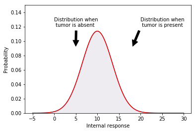 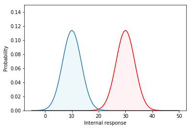 ] .col2[ - Discriminability refers to how separated the probability of incidence curves are. IF they are very close together then it is hard to tell signal from noise. - However just being far apart is not enough. It also depends on the **spread** of the distributions. ] --- class: light # Discriminability .col1[ 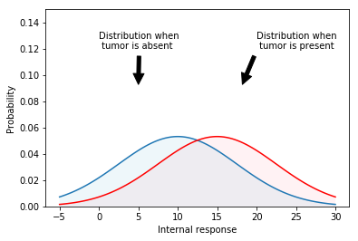 ] .col2[ - Here the distance between the means is moderate but the discrimination would be tough because things overlap so much. ] --- class: light # Discriminability index (d') $$ d' = \frac{separation}{spread} $$ - d' is a statistic for measuring perceptual sensitivity - often d' refers to the "dectectability" or "discriminability" in perceptual experiments - high d' implies good performance is possible - low d' implies poor performance --- class: light # Criterion/Bias Just like d' is a statistics for sensitivity, Beta (B) is the statistics for bias. When - B=1, the criterion in neutral (no bias) - B<1, the criterion is low (liberal bias) - B>1, the criterion is high (conservative bias) An alternative measure is known as, c, and it measures basically the same thing just in a slightly different way. c is the distance between the criterion and the neutral point. - c=0, the criterion is neutral (no bias) - c>0, are measured in units of standard deviation and show the bias in favor of either the signal present or signal absent response (positive). --- class: light # ROC: Receiver Operating Characteristic .col1[ 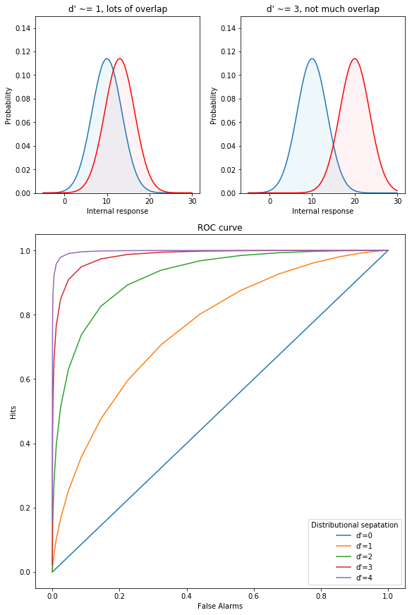 ] .col2[ We can describe the full range of choices about a deterministic criterion using an ROC curve, which stands for receiver-operating characteristic. - The ROC curve captures, in a single graph, the various alternatives that are available to the doctor as they move their criterion to higher and lower levels. - d' can be read directly off this graph by plotting false alarms versus hits for a given task/experiment. ] --- class: light # How to compute d' - In the most basic version of SDT we assume that the distributions for probability of indicidence have equal variance. In addition we assume that variance is 1. - This makes computing thing like d' possible. It seems like a crazy assumption but the part about it being unit variance is not that big of a deal. - Equal variance assumption can be relaxed in some more complicated versions of SDT. 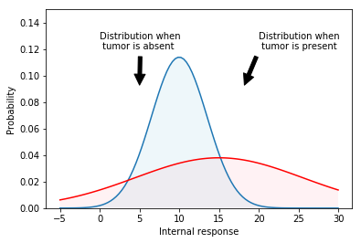 --- class: light # Example calculations In lab part 1 we will analyze some simulated data just so you see how the various values are calculated. --- class: light # How to you report this stuff? Actually it is pretty simple. Often d' or Beta/c can be calculated for each participant in your study. You then might analyze mean d' across conditions summarizing with a mean, etc... --- class: light # Applications - Perception In lab part 2 we will analyze some example data from a simple perceptual experiment. This will put into practice the information you learned in the first lab. --- class: light # Applications - Memory In lab part 3 we will analyze some example data from a simple recognition memory experiment. This will let you see how SDT is used in multiple fields to analyze data of various types. --- class: light, center # FIRE UP JUPYTERHUB